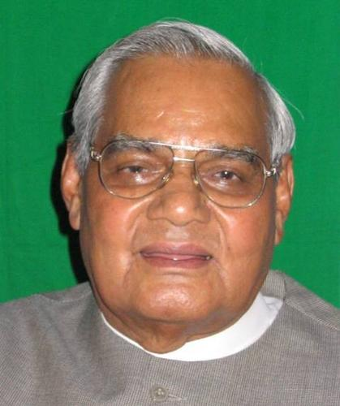

उमा भारती
प्रमुख कार्यकाल:
कोयला मन्त्रालयः, कैबिनेट मंत्री
२००२ - २००३
पेयजल एवं स्वच्छता मंत्रालय, कैबिनेट मंत्री
२०१७ - २०१९
खान मन्त्रालयः, कैबिनेट मंत्री
२००२ - २००३

द्वितीय अटल बिहारी वाजपेयी मंत्रालय
मानव संसाधन विकास मन्त्रालय
राज्यमन्त्री
महिला एवं बाल विकास विभाग
राज्यमन्त्री (स्वतन्त्र प्रभार)
युवा कार्य एवं खेल विभाग
राज्यमन्त्री (स्वतन्त्र प्रभार)
महिला एवं बाल विकास विभाग
राज्यमन्त्री (स्वतन्त्र प्रभार)
तृतीय अटल बिहारी वाजपेयी मंत्रालय
प्रथम नरेन्द्र मोदी मंत्रालय
द्वितीय अटल बिहारी वाजपेयी मंत्रालय

1_Upload_2283.pdf
1_Upload_2136.pdf

अटल बिहारी वाजपेयी
o-Atal_Bihari_Vajpayee.htmlप्रधानमन्त्री
१९ मार्चमासः १९९८ - १३ अक्तूबरमासः १९९९

मुरली मनोहर जोशी
o-Murli_Manohar_Joshi.htmlकैबिनेट मंत्री
१९ मार्चमासः १९९८ - १३ अक्तूबरमासः १९९९
उमा भारती
o-Uma_Bharti.htmlराज्यमन्त्री
२० मार्चमासः १९९८ - १ मार्चमासः १९९९
प्रासंगिक आदेश
1_Upload_2283.pdf[4]२० मार्च: १९९८मन्त्रिपरिषदः1_Upload_2129.pdf[28]२२ मई १९९८मन्त्रिपरिषदः1_Upload_2130.pdf[28]२३ मई १९९८मन्त्रिपरिषदः1_Upload_2131.pdf[27]१२ अक्तूबर: १९९८मन्त्रिपरिषदः1_Upload_2132.pdf[30]५ दिसंबर: १९९८मन्त्रिपरिषदः1_Upload_2133.pdf[29]३० जनवरी: १९९९मन्त्रिपरिषदः1_Upload_2134.pdf[29]३ फरवरी: १९९९मन्त्रिपरिषदः1_Upload_2135.pdf[29]१६ फरवरी: १९९९मन्त्रिपरिषदः